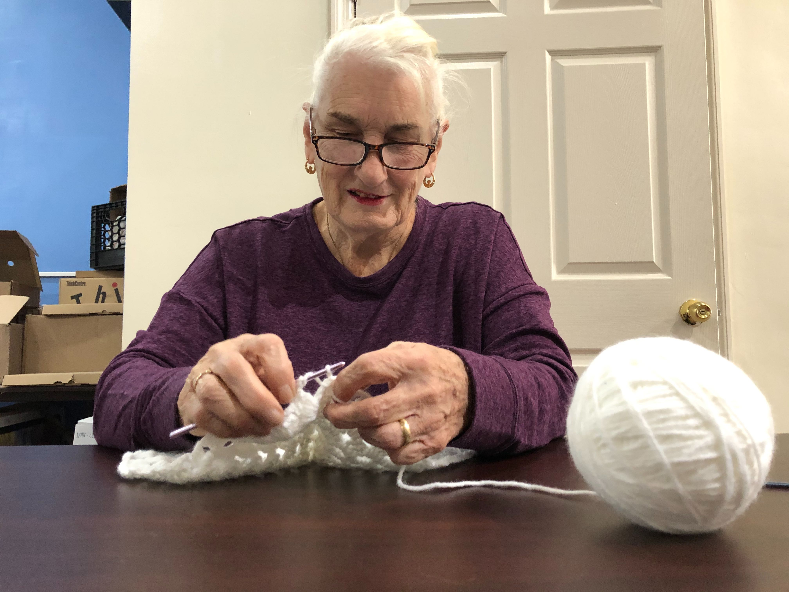

New senior center stitching a close-knit community
By: Madison Ruffo and Yara El Murr

11.08.2019. Anne Farrell, 77, of Bay Ridge knitting during Bay Ridge Connect's knitting corner session. [Photo by Yara El Murr]
BAY RIDGE - When Anne Farrell, 77, opened her mailbox, she noticed a bright yellow flyer sticking out of the usual clutter of ads, bills, and discount coupons.
On the back of the flyer, Farrell noticed a detailed schedule: Fridays, Knitting Corner. Maybe someone knows how to make caps, she thought. She needs to knit two to match the baby blankets for her neighbor’s grandchildren.
That’s when Farrel decided to attend her first organized activity for older adults.
The Bay Ridge Center has been serving the older adults of southwest Brooklyn for over 40 years. On November 4, it started operating in a new Naturally Occurring Retirement Community (NORC) location on Third Avenue in Bay Ridge.
Activities at the new location are rolling slowly as the center prepares for the official opening on November 20.
A Naturally Occurring Retirement Community (NORC) is a multi-age housing development or neighborhood that wasn’t originally designed for older adults, but is now home to a significant number of individuals that are over 55 years-old.
The new space, Bay Ridge Connects, aims to cater to adults ages 60 to 75.
“The whole focus of that office is going to be
activities and programming geared toward younger seniors,”
said Todd Fliedner, deputy executive director of Bay Ridge Center. “What a
60 year old is interested [in], a 90 year old is not interested in.”
The
New York City Department of Aging estimates that 20% of Bay Ridge residents are 60+. Older adults are projected to reach 1.86 million of the City's population by 2040. The highest number of 60+ individuals in the city resides in Brooklyn.
Bay Ridge Center already has a contract with the New York State Department of Aging to help fund their existing location on Ovington Avenue. It recently received a $1 million planning grant in 2016 from a New York City Council initiative through City Councilman Vincent J. Gentile (D-43).
A
survey conducted by Bay Ridge Center examined the demographics and subsequent needs of the senior population in Bay Ridge, and found that the majority of seniors in the neighborhood are below age 75.
The main focus of the survey, aside from categorizing demographics of Bay Ridge seniors, was to find out what older residents would like to see provided by local senior centers.
Two in five respondents said they would like to be more involved in social activities. Suggestions included expanding volunteer-provided services, government benefits, and activities for older Bay Ridge residents.
“We need the space to do the programming that can meet the interests of the various age groups,” said Fliedner.
Popular activities included knitting, technology workshops, and field trips, said Mara Johnson, a social work intern at the Bay Ridge Center.
“The reality is, a lot of them are still working, most of them are still active,” said Fliedner. “We really want the new space to
celebrate health and wellness and activity, and connections.”
By the end of the knitting session, Farrell had met Loretta Gilroy who might be able to teach her how to knit baby caps.
“It’s good to have someone do it with you,” said Farrell. “If I see it, I can [understand] how to do it.”